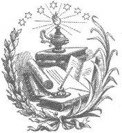

Din sokaktaki insanlar tarafından doğru, filozoflar tarafından yanlış ve siyasetçiler tarafından da gerekli olarak görülür.
GENÇ SENECA
Ateşi yakandır kâfir
İçinde yanan değil.
WILLIAM SHAKESPEARE
Ama halktan hiç kimse İncil'de yazanların İncil'i anlattığına inanmaz; İncil'de yazanların kendilerini anlattığına ikna olmuşlardır.
GEORGE BERNARD SHAW
Bir ateistin, görünmez bir desteği olmayan insan olarak tanımlandığını duydum.
JOHN BUCHAN
Bir insana bir balık verin, onu gün boyunca tok tutarsınız; bir insana bir din verin, balık için dua ederken açlıktan ölür.
ANONİM
Saf kişi her söze inanır
İhtiyatlı olansa, attığı her adımı hesaplar.
SÜLEYMAN'IN ÖZDEYİŞLERİ, 14:15
Kişinin inancı sahip olduğu kanıtlarla doğru orantılı olmalıdır.
SAM HARRIS
Bir insanın dinini öğrenmek için nasıl şahadet getirdiğini değil, hoşgörüsüzlüğünün ölçüsünü anlamamız gerekir.
ERIC HOFFER
Dinin azaldığı yerde sanat yükselir.
FRIEDRICH NIETZSCHE

Tırtıl, yumurtlamak için nasıl en temiz yaprağı seçiyorsa, rahip de lanetini en temiz mutlulukların içine yerleştirir.
WILLIAM BLAKE
Hakikatle çarpıştığında ayakta kalamayan iman, pişmanlık duymayı da gerektirmez.
ARTHUR C. CLARKE
Din cehenneme gitmekten korkanlar için, maneviyat ise benim gibi zaten oradan olanlar içindir.
DAVE MUSTAINE
Bir çağa ait din, bir sonraki çağ için edebi eğlencedir.
RALPH WALDO EMERSON
Her itibar boşluğuna uygun bir enayilik dolgusu vardır.
RICHARD CLOPTON
İşe, Hıristiyanlığı Hakikat'ten daha çok severek başlayanlar, ardından kendi mezhebini ya da kilisesini Hıristiyanlıktan daha çok sevecek ve sonunda da kendini hepsinden çok sevecektir.
SAMUEL TAYLOR COLERIDGE
Düş kutsaldır ve bütün kutsal yazılar da düşten başka bir şey değildir.
UMBERTO ECO
İnsanlığın duaları, özgür iradenin hastalıklı hali olduğuna göre, öğretileri de aklın hastalıklı halidir.
RALPH WALDO EMERSON
Mitler, artık kimsenin inanmadığı bir dindir.
JAMES K. FEIBLEMAN
Fenerler, kiliselerden daha çok işe yarar.
BENJAMIN FRANKLIN
Her köyde bir meşale vardır: okul müdürü ve bir de yangın söndürücü: rahip.
VICTOR HUGO
Dua etmek sallanan sandalye gibidir; oyalanma fırsatı verir, ama bir yere götürmez.
GYPSY ROSE LEE
En az bilinen şeye inanıldığı kadar başka hiçbir şeye bu denli sıkıca inanılmaz.
MICHEL EYQUEM DE MONTAIGNE
Mutlak iman, mutlak güç gibi mutlak biçimde bozulur.
ERIC HOFFER
Bütün dinler cahiller için görkemli, siyasetçiler için kullanışlı ve filozoflar için saçmadır.
LUCRETİUS
Çalışan iki el, duaya amin diyen binlercesinin yaptığından daha çok iş yapar.
ANONİM